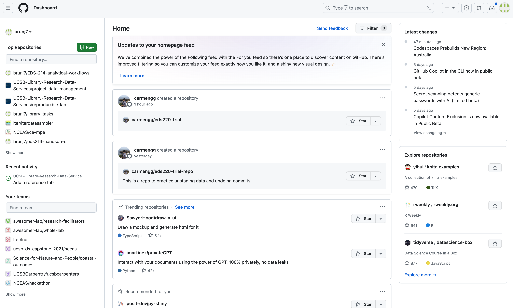
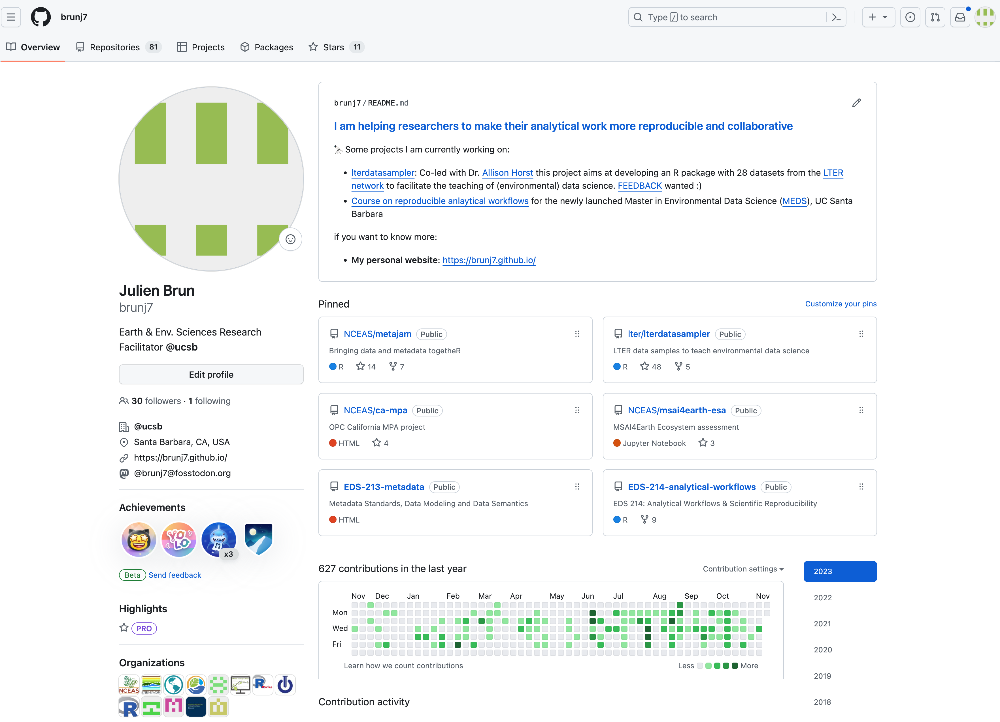
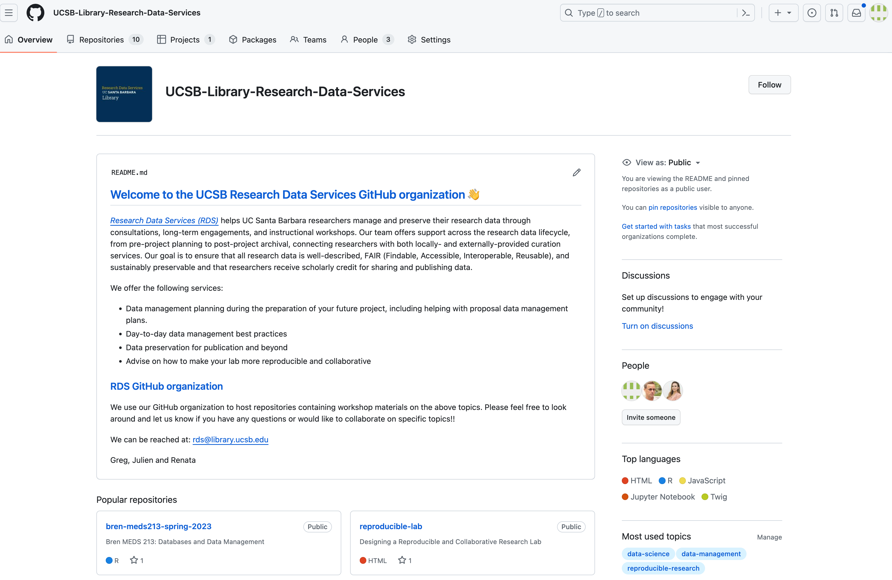
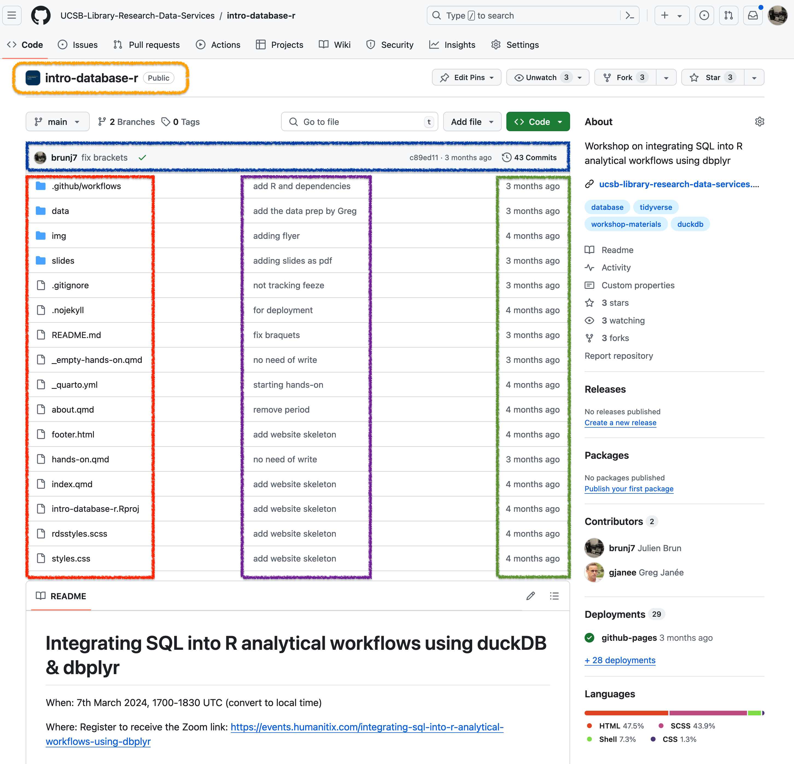
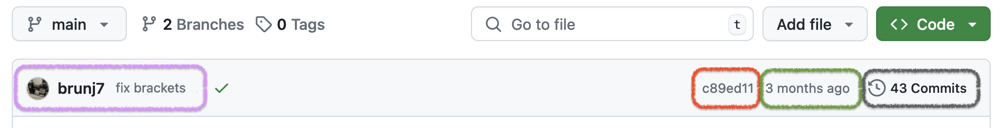
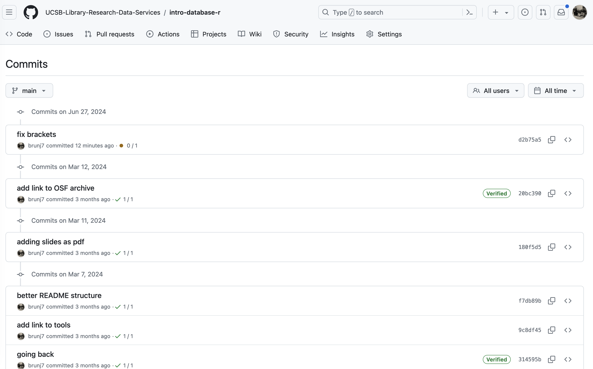
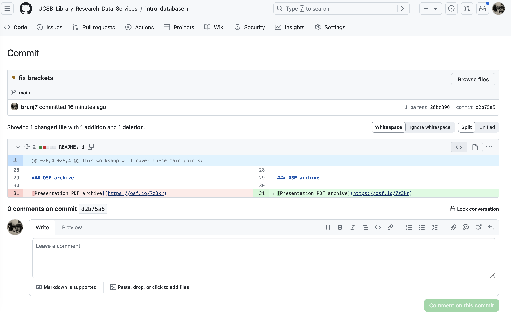

git and GitHub
Version Control with git and GitHub
Aka – Say goodbye to script_JB_03v5b.R !!
The problem with save_as
Every file in the scientific process changes. Manuscripts are edited. Figures get revised. Code gets fixed when problems are discovered. Data files get combined together, then errors are fixed, and then they are split and combined again. In the course of a single analysis, one can expect thousands of changes to files. And yet, all we use to track this are simplistic filenames. You might think there is a better way, and you’d be right: version control.
Version control systems help you track all of the changes to your files, without the spaghetti mess that ensues from simple file renaming. In other words, version control is a system that helps you to manage the different versions of your files in an organized manner. It will help you to never have to duplicate files using save as as a way to keep different versions of a file (see below). Version control helps you to develop a timeline of snapshots containing the different versions of a file. At any point in time, you will be able to roll back to a specific version. Bonus: you can add a short description (commit message) to remember what each specific version is about.
What is the difference between git and GitHub?
- git: is a version control software used to track files in a folder (a repository)
- git creates a timeline or history of your files
- GitHub: is a code repository in the cloud that enables users to store their git repositories and share them with others. Github also adds many features to manage projects and document your work.
git

This section focuses on the code versioning system called Git. Note that there are others, such as Mercurial or svn for example.
Git is a free and open source distributed version control system. It has many functionalities and was originally geared towards software development and production environment. Git was initially designed and developed in 2005 by Linux kernel developers (including Linus Torvalds) to track the development of the Linux kernel. Here is a fun video of Linus Torvalds touting Git to Google.
How does it work?
Git can be enabled on a specific folder/directory on your file system to version files within that directory (including sub-directories). In git (and other version control systems) terms, this “tracked folder” is called a repository (which formally is a specific data structure storing versioning information).
What git is not:
- Git is not a backup per se
- Git is not good at versioning large files (there are workarounds) => not meant for large data
Fun fact
Git was initially designed and developed by Linux kernel developers (including Linus Torvalds) to track the development of the Linux kernel in 2005. Here is a fun video of Linus Torvalds touting Git to Google engineers.
Repository
Git can be enabled on a specific folder/directory on your file system to version files within that directory (including sub-directories). In git (and other version control systems) terms, this “tracked folder” is called a repository (which formally is a specific data structure storing versioning information).
Although there are many ways to start a new repository, GitHub (or any other cloud solution, such as GitLab) provides among the most convenient way of starting a repository.

GitHub
GitHub is a company that hosts git repositories online and provides several collaboration features (among which forking). GitHub fosters a great user community and has built a nice web interface to git, also adding great visualization/rendering capacities of your data.
GitHub Dashboard
This is the default landing page when you log into your account. It provides a mix of the most recent resources and activities of your and your collaborators’ actions, as well as some resources relevant to your work. The dashboard therefore changes on a regular basis. Once logged in, you can access your dashboard at https://github.com

GtiHub User page
This page can be reached using the following URL: https://github.com/username. For my user (brunj7) it would be: https://github.com/brunj7. It is a great space for you to provide some information about yourself and the main repositories you are working on. It also lists the GitHub Organizations you are part of. But more importantly, Users own repositories to host and share their code. You can list repositories from a User by clicking on the repositories tab in the main GitHub menu bar at the top.

GitHub Organization page
We will talk more about GitHub Organizations later. In a nutshell, organizations are like groups or teams that users can be members of. Like Users, Organizations can have a landing page and own repositories. However, they add several perks in terms of user management. Similarly to Users, you can access repositories from an Organization by clicking on the repositories tab in the main GitHub menu bar at the top. You can access an organization’s page similarly to a user: https://github.com/organization-name; e.g. https://github.com/UCSB-Library-Research-Data-Services

Let’s look at a repository on GitHub
The screenshot below shows the landing page of a repository on GitHub. We would like to highlight different important parts of this view:
- Directly under the navigation bar (top-left) you will find the name of the repository (orange)
- Above the files listing, there is information about the latest commit to this repository (blue)
- On the left, you will have the files and folder names (red)
- In the middle, the last commit message on this file (or file contained in a folder) (purple)
- On the right, the time stamps of the latest commit (green)

Below the file listing, there will be a rendering of the README.md file, one more reason to make sure to add one :) Looking into more details at the information provided about the last commit, we can see that we know:
- Which user did this last commit (brunj7) and the associated commit message
- The the 7 first digit of unique identifier (SHA) of this commit
- When this last commit was made (3 months ago) = The total number of commits on this branch (43 Commits)

This total number of commits is a hyperlink that lets you access the full history of the main branch by clicking on it.

We can keep drilling and look at a specific commit by clicking on the hash number listed on the right. For example, we can look at the first commit at the top (d2b75a5) and display the exact changes that have been made since the previous (also named parent) commit 20bc390:

Tracking these changes, and seeing how they relate to scripts and files is exactly what Git and GitHub are good for. We will show how they can be effective for tracking versions of scientific code, figures, and other text files such as manuscripts to develop a reproducible workflow.
Recap
- GitHub.com / your dashboard (if logged in): https://github.com
- A user account: https://github.com/brunj7
- An organization account: https://github.com/UCSB-Library-Research-Data-Services
Recommended reading
Braga PHP, Hébert K, Hudgins EJ, Scott ER, Edwards BPM, Sánchez Reyes LL, et al. Not just for programmers: How GitHub can accelerate collaborative and reproducible research in ecology and evolution. Methods in Ecology and Evolution. 2023;14: 1364–1380. doi:10.1111/2041-210X.14108
Aknowledgements
This materials was adapted from NCEAS Reproducible Research Techniques for Synthesis & Collaborative Coding with GitHub. LNO Scientific Computing Team.